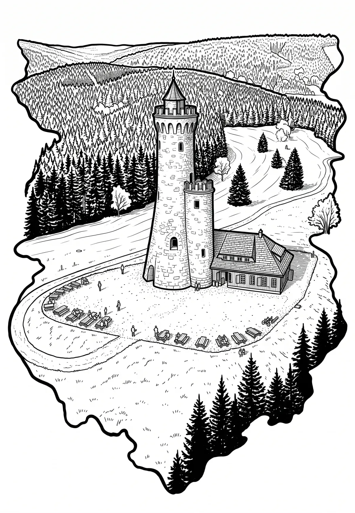

Dalimilova rozhledna
Olomoucký kraj · 959 m n. m.

technická památka · #012
Dalimilova rozhledna stojí na vrchu Větrov nedaleko osady Velké Vrbno, která je součástí Starého Města pod Sněžníkem. Kamenná stavba je replikou historické rozhledny, která stála na Králickém Sněžníku.